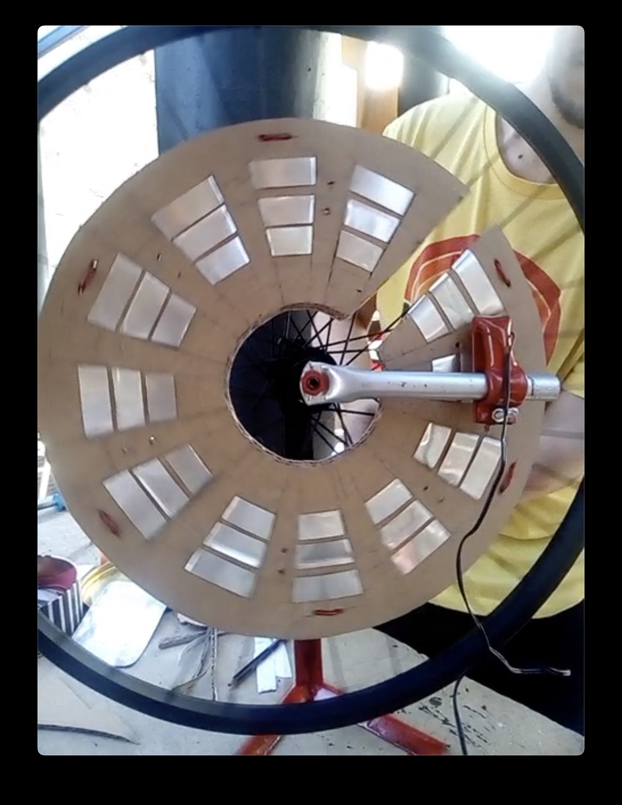
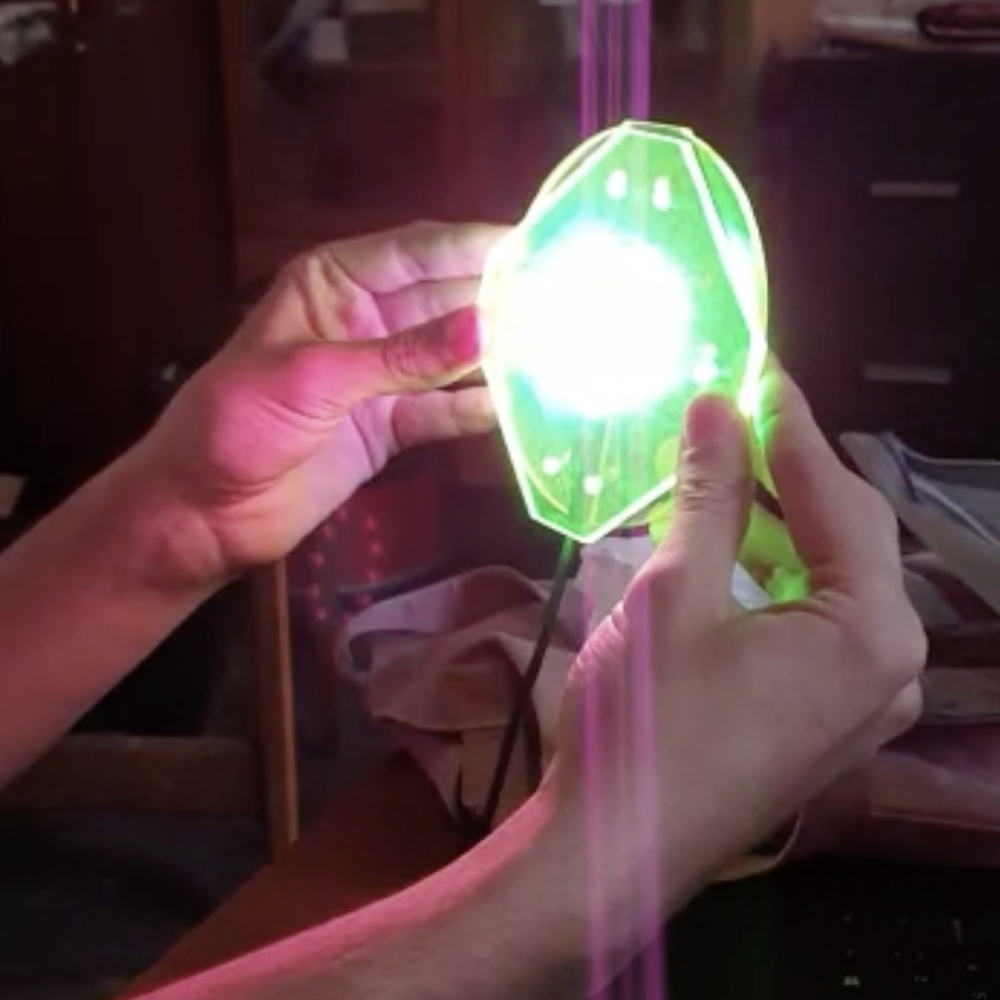
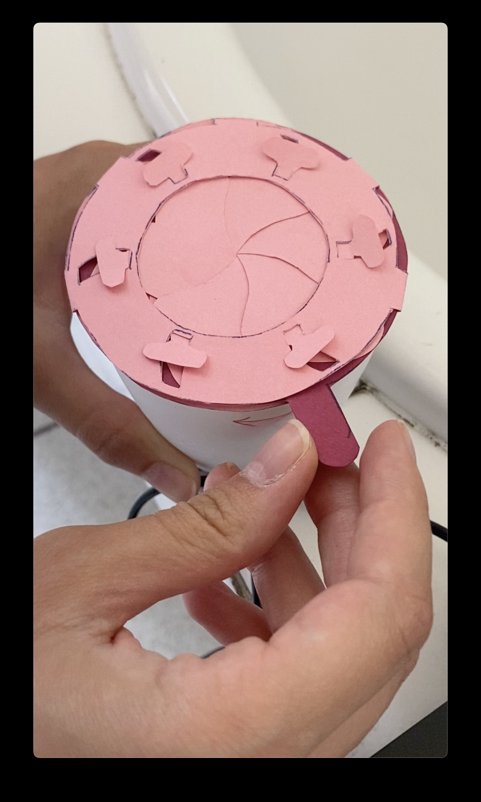

universidad de chileuniversidad de chile
facultad de arquitectura y urbanismofaculty of architecture and urbanism
escuela de diseñodesign school
segundo semestre 2022 (agosto - diciembre)second semester 2022 (august - december)
curso electivo de diseño, donde estudiamos los fundamentos de interfaces para música electrónica, aplicada a la programación de instrumentso musicales hechos con microcontroladores y lenguajes de programación orientados a música.elective course of design, where we study the foundations of electronic music interfaces, applied to programming of musical instruments with microcontrollers and computer music programming languages.
aprenderemos a diseñar interfaces táctiles, máquinas de estado finitas, y retroalimentación multimedia para presentaciones de música en vivo. usaremos microcontroladores corriendo CircuitPython y programaremos software con los lenguajes ChucK y Pure Data.we will learn how to design tactile interfaces, finite state machines and multimedia feedback for live music performance. we will use microcontrollers running CircuitPython and the Chuck and Pure Data programming languages.
el trabajo se hace de forma pública y compartida, con les estudiantes compartiendo sus apuntes y realizando trabajos grupales de investigación aplicada.all the work will be done in public, collaboratively, with the students sharing their notes and applied research.
aarón montoya-moraga: profesore, creadora del cursoprofessor, creator of the course
ignacio passalacqua: ayudanteteaching assistant